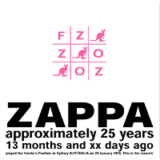
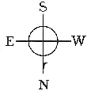

Заппа'zУх!Ой!
русский более или менее регулярный бюллетень для поклонников американского композитора
Frank'а Vincent'а Zappa'ы
Выпуск.42 (12 января 2003)
Ноги вверх
Лучше поздно, чем никогда. Неподходящий лозунг для будильника. А для общественного транспорта ничего. Сойдет. Приемлемо. Лишь бы зеленым огоньком у поворота подмигнул, обдал в конце-концов теплом салона. За это все простим трамваю пятый номер.
С тысяча девятьсот девяносто девятого года ждали милого. Как в декабре прошел последний вагон, EIHN, так и курили. Табак, бамбук и от сапог шнурки. Ни тока в проводах, ни в рельсах звона. Zero ту-ту.
И вдруг, одиннадцатого марта прошлого года объявление, не расходится, главный кондуктор закладывает дрожки, выйдет машина из депо в апреле, мае. Приобретайте проездные. Все дружно стали в очередь и парились до самого августа. Могли бы и до декабря, мочевой пузырь железный, коленки костяные, но это в следующий раз. В жизни всегда есть место подвигу, а заодно медали и ее обратной стороне.
А медаль самая настоящая, только на грудь не повесишь. Бумага. Свернется, полиняет от дождя и стуж. То есть, скорее грамота. Гармошка, вроде книжки Агнии Барто, только вместо "идет бычок, качается" мелким-мелким шрифтом фамилии, фамилии, фамилии. Имена первых доноров, спонсоров, авансом забашлявших за новый альбом маэстро Фрэнка Заппы. Пять тысяч счастливчиков, как и было обещано. А, впрочем, не считал. Зато объявление о замужестве девицы точно одно.
Moon Zappa & Paul Doucette
1 June 2002
Тоже хорошее дело, все лучше, чем на заборе или на стене общественной уборной. Все таки вкладыш в пластиночный конверт. Переживет века, миллион лет до встречи Земли со следующим астероидом. Равно, как и другие вложения в беленький, тощенький конвертик. Маркий , к внешним механическим воздействиям нестойкий.

А таких, ценных довесков к гибриду доски почета и объявлений Zappa Family Trust, в беленьком бумажном целых два. Диск первый, семьдесят три минуты, тридцать три секунды музыки, и диск второй, минуты той же гирькой, а секунд в три раза меньше. Что, в общем-то, для глаза незаметно, если, проверку выполнить, разлив по паре одинаковых граненных стаканов.
А если решать задачку прямолинейно, считать вообще не придется. Удовольствие не имеет количественного выражения. Загружаете в деку один компакт, потом - второй и убеждаетесь. Простая техника, минимум операций. Как собственно и группа, с которой ФЗ разъезжал по миру в гастрольный сезон сентября семьдесят пятого - марта семьдесят шестого.
FZ - guitar, vocals
Napoleon Murphy Brock - tenor sax, vocals
Andre Lewis - keyboards, vocals
Roy Estrada - bass, vocals
Terry Bozzio - drums, vocals
Пяток недель девчонка на левом фланге помаячила, ноябрь-декабрь,
Norma Jean Bell - alto sax, vocals
Да гостем был на паре канадских выступлений
Eddie Jobson - keyboard, violin
Все остальное время, как в разведке, четыре штык-ножа и пистолет ТТ. Ничего лишнего. Не жирным маслом картина, как в тысяча девятьсот восемьдесят восьмом, 11 + 1, не бесчисленными стеклышками мозаика, 8 героев и вожак, Австралия, семьдесят третий. Нет. Уголь, картон. Простой рисунок. Музыка в разрезе. Схема. А слушать приятно.
disc 1
disc 2
Нужно только привыкнуть. Слушателю к аскетизму записи. К предельной откровенности и ясности мысли. А музыкантам просто к сцене сиднейского Hordern Pavilion. Всего-то полчаса 20 января 1976 и к началу Black Napkins все пятеро уже как дома. И вам уже не кажется, что это Вагнер на двузубой расческе. И, вообще, опера для белки и свистка.
Сицилианская защита, разыгранная великим мастером, без двух ладей, ферзи и одного слона. Меньше лака, но та же бесконечность вариантов, красивых ходов, блестящих озарений и замечательных фантазий мужской игры.
Собственно премьера на этом новом альбоме, с каталожным номером 70, одна. Два раза повторенный Kaiser Rolls. Композиция открывает второй диск и его же закрывает. Финальный вариант - репетиция. После прощальных аккордов концерта, что-то вроде привычного нам празднования старого Нового года. Обратная перспектива. Так, наверное, у них в антиподии новозеландской и должно быть. Не зря же люди ZFT рисуют в углу обложки компас ногами вверх.

Занятно, конечно, но только лучше, если уж взялись воскрешать эпоху, туда-сюда двигать бегунок по логарифмической линейке времени, предъявили бы документ, полный концерт. Весь целиком. Я даже согласен на три диска, но чтобы все шло положенным чередом, включая в нынешнем варианте отрезанные, Honey, Don't You Want A Man Like Me?" и "Tryin' To Grow A Chin"? В любую сторону от головы к хвосту или обратно, от пахового юга к затылочному северу.
Но, впрочем, Заппу, тем более такой его живой кусок, никакими маникюрными ножницами географии и белыми нитками кухонной физики не испортить. Потому, что хорош. И дух прекрасен. Особенно, если залпом полчаса от Take Your Clothes Off When You Dance до Keep It Greasy хватануть. Кровь разгоняют. Zillion о-го-го. По сему рекомендуется прежде всего тем, кто недолюбливает этот самый обезжиренный период Zoot Allures. Не так уж он прост и скуден, как кажется. Железа, кальция и витамина С в диетических отрубях порою много больше, чем в ресторанном эскалопе. И вид у элементов первозданный.
Если все привычные уже соло Фрэнка в два раза удлинить. Добавить к ним мечтательные Nappy Brock'а, изобретательные Andre Lewis'а, математически точные Terry Bozzio и лаконичные вокальные Roy'я Ralph'а Moleman Guacamole Guadalupe Hidalgo Estrada'ы, сумма в самом деле выйдет совершенно новая. Очень, очень симпатичная. И мало не покажется. И много. В самый раз.
Другой вопрос в какой? Первый или последний? Сама идея новой семейной компании, Vaulternative Records, прекрасна. Если только не унижать и не оскорблять прилюдно Ryko, которое, между прочим, со своими, может быть, и дурацкими Strictly Commercial, Cheep Thrills и Threesome, последние результаты SoundScan свидетельствуют, абсолютно точно чувствует и понимает рынок. Хоть как-то, но поддерживает, выправляет неуклонно снижающийся индекс продаж пластинок ФВЗ.
А значит не надо опускать людей, что-то творящих, поддерживающих у публики интерес к творчеству мастера. Нужно просто, по-деловому внести свою лепту, заняться работой. Публикацией архивов, например. Выкатывать по два, по три, по пять концертов в год, 1973, 1978, 1984 и так далее, и так далее, от даты к дате, по всей FM шкале машины времени, от шестьдесят шестого к восемьдесят восьмому. И станет на планете хорошо. И в подии и в анти. Но главное не будет возникать вопрос о случайности и странности выбора материала для первого альбома серии.
FZ:OZ. VR2002-1.
Да, только, где они VR2002-2, -3, -4 и уже, наверное, можно спросить VR2003-1? В каком старом новом? Какой частью тела на восток? Увы, лишь "наша мама до Зацепы водит сразу два прицепа". Честь ей и хвала, и шесть копеек в щелку кассы. Но к музыке все это, как обычно, не имеет никакого отношения.
Любовь же на морозе только крепче делается. И смешнее, конечно.
Искренне Ваш, Владимир Советов
http://www.arf.ru/
| Домой | Заппа'zУх!Ой! | Поиск | Хозяин |